We will finish the rough design of our scene in this tutorial step. Open our “MyScene.scene” file in SceneEdit.
OK, let’s have a look at our scene: the chair still doesn’t look right. It seems it’s painted on the floor. We will try to do something about it. We already did the same with the desk earlier in steps 2 and 3 of this tutorial. We created a “desk” entity and we laid out the regions so that the desk overlaps the actors when needed. The region approach is very flexible and it’s particularly useful for large objects and for object with an irregular shape. For smaller objects it is easier to convert them to a something called “free entities”. We will do this with the chair object.
So, what are the “free entities”? We already used regular entities before; the background and the desk objects are entities, but those entities are tied to the scene layout. The free entities act just like actors, they are being drawn depending on where in the scene they are placed (in other words, in which region they are standing). This might sound confusing at first but we will learn how it really works.
OK, let’s create the “chair” entity. First thing we need to do is to prepare the chair graphics. We already did this before with the background image and with the desk image. Switch to the ProjectMan tool, right click the “MyScene” folder and select the “Import->Import file(s)…” command. Browse to the “data\tutorial\gfx” folder and select the “chair.bmp” file. The image will be copied to our scene’s folder.
Switch back to the SceneEdit. In the layer list window select the “Free entities” item. The node list window will change its contents to display all free entities. So far it’s empty. Click the “Add entity” button and select “Add sprite entity”. A “new entity” object is created. Change its name to “chair”. You may also change its caption property to “chair”, we will use the caption later.
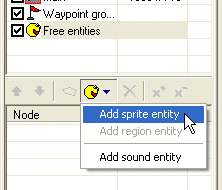
Now we need to change the graphics representation of the entity. Click the “…” button near the “Sprite” property and browse to the “chair.bmp” file you’ve imported earlier. Move the entity in the scene view to cover the chair image in the background:
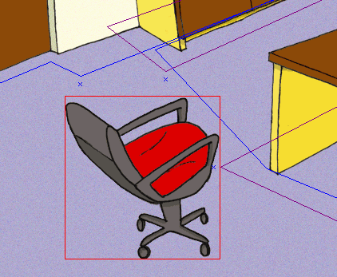
Save the scene and run the game (using the ProjectMan) to test the scene. Oops, something’s wrong, the actor still overlaps the chair all the time. What’s the matter? Well, when there are more free objects (free entities or actors) standing in one region, the engine determines their drawing order by their Y position on the screen. The actor’s position is determined by the position of his feet. But the chair image has its base point in the upper left corner of the image. You’d surely expect that a chair will have its base point where the chair hits the floor, right? But how do we achieve this? Instead of a simple BMP image, we will use a sprite. A “sprite” in WME is actually a composite image. It can be a simple static image or an animation, plus you can define some more properties of the image (read more about sprites). One of those additional properties is the “hot spot”. A hot spot is the base point of the sprite. That’s exactly what we need to change the base point of our chair object.
OK, we need to create a sprite for the chair. Switch to the ProjectMan. Right click the “MyScene” folder and select the “Add->Add sprite…” command. In the template selection window, select the “Empty sprite” template; change the name field to “chair” and click OK.
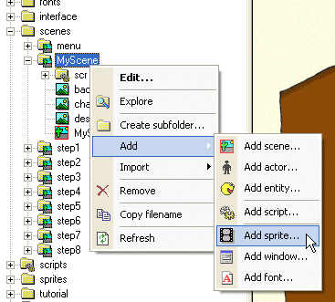
A new sprite file will be created in your “MyScene” folder and it’s named “chair.sprite”. Double click file and the ProjectMan will open it in a SpriteEdit tool. The sprite is empty right now. We will add one frame with the chair image. Click the “Add frame(s)” button and browse to the “chair.bmp” file.
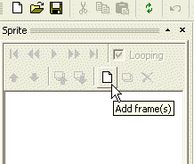
Now we need to change the hot spot. You can do it two ways: either drag the chair image using your mouse or fill in the hot spot coordinates in the “Frame properties” window (the hot spot is displayed as a small red cross in the sprite view window).
Change the hot spot to 135, 174.
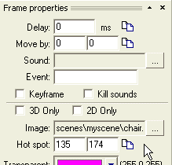
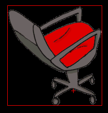
Save the sprite and quit the SpriteEdit tool. Switch back to SceneEdit. In the properties window of the “chair” entity click the “…” button near the “Sprite” property and browse to our newly created “chair.sprite” file, select the file and click OK. You’ll notice that the chair has moved; that’s because its base point has changed. Move the entity again to fit the background image. That’s it! Save the scene and run the game.
The overlapping now works as expected. If the actor is behind the char, he is overlapped by it and vice versa.
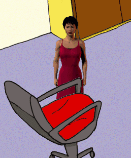 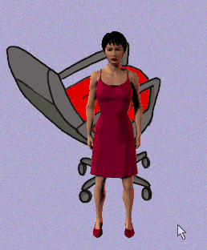
All we have to do now is to prevent the actor from walking through the chair. We will add a new blocked region and a bunch of waypoints.
Add a blocked region (named “block_chair”) and four waypoints. You should already know how to do it. It’s described in steps 4 and 5 of this tutorial. You will get results similar to the picture below:
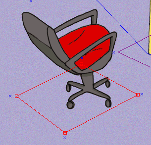
Our scene layout now forks fine, but the actor looks bit too small for the rest of the scene. We can change the scaling behavior using the so-called “scale levels”. Scale levels are represented by those bright green lines in SceneEdit. The idea is: you define a scale factor for certain key levels of your scene and the actors then automatically compute a scale appropriate to their current Y position.
There already two scale levels predefined in our scene (and you will rarely need more than two scale levels). You can move the scale levels with your mouse using the handle on the left side of the scale level line. And you can remove the scale level or change its properties right clicking the handle.
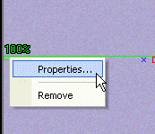
If you need to add another scale level into the scene, use the “Add scale level” button.
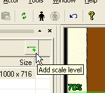
OK, enough theory, let’s setup the scale levels for our scene. Move the top scale level to the upper top most point of the floor and set its scale factor to 90%.
Then move the other scale level to the bottom part of the floor and set its scale factor to 160%.
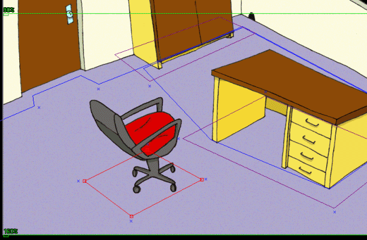
You probably wonder how to determine the correct scale factor. Well, the best way is to use the actor placement tool. SceneEdit allows you to place an actor into the scene you are designing to verify how the layout and scaling works. You don’t have to run the game all the time to test the results of your editing efforts! You can find the “Place actor” command on the toolbar or in the main menu (Actor->Place actor).
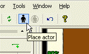
Press the button and the SceneEdit will ask you to specify an actor file to load. Browse to the “data\actors\molly” folder and select the “molly.actor” file. Once the actor is loaded, you can use the mouse to move him within the scene. If you press the right mouse button, you will change the direction the actor is facing. By pressing the left mouse button you will place the actor. If you need to change his position later, just press the “Place actor” button again.
Note: the actor placement tool is for design purposes only; it will not affect your scene in any way.
By placing the actor to different places in your scene you can easily determine the right scale factor for your scale levels.
The layout of our scene is now complete. We will add some eye candy. Let’s say we want our actor to appear a bit darker when he is standing in the far corner of the scene.
We can add special regions to affect the color and scaling of the actors. Those regions are called “decoration regions” (remember, we already know two other types of regions: the layout and blocked regions).
We add the decoration regions exactly the same way as the other regions: by pressing the “Add region” button (make sure you have the “main” layer selected).
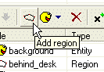
Press the button and a new region will be inserted into a scene. Change its name to “shade” and then change the radio button from “Layout” to “Decoration”. Looking at the “Region properties” window, notice the “Color” combo-box. You can use it to select a color for this region. Whenever an actor is standing within this region, his original colors will be mixed with this color. Change the color of our region to light gray.
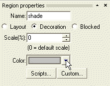
Note: You could as well change the scaling factor of this region. It would override the default scaling defined by the scale levels.
Note: The coloring only works if
1) the game runs in the accelerated mode; in the compatibility mode the coloring effects are disabled
2) the object must have a “Colorable” attribute set to true
Now move the region to the correct position and change its shape:
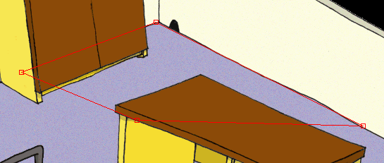
Note: The decoration regions don’t affect the scene layout. But the actor changes his color by the topmost region he finds, therefore the decoration regions should be placed at the end of the node list in SceneEdit.
You can test the results directly in the SceneEdit using the actor placement tool described above.
Save the scene and quit SceneEdit. You can run the game and test all the changes we did in this step. The actor should have a correct size, he will walk round the chair, and when he is in the far corner of the room, he will have a slightly darker color.
Our scene looks OK now; we will add some interactivity in Step 7: Region entities, cursors, scripts.